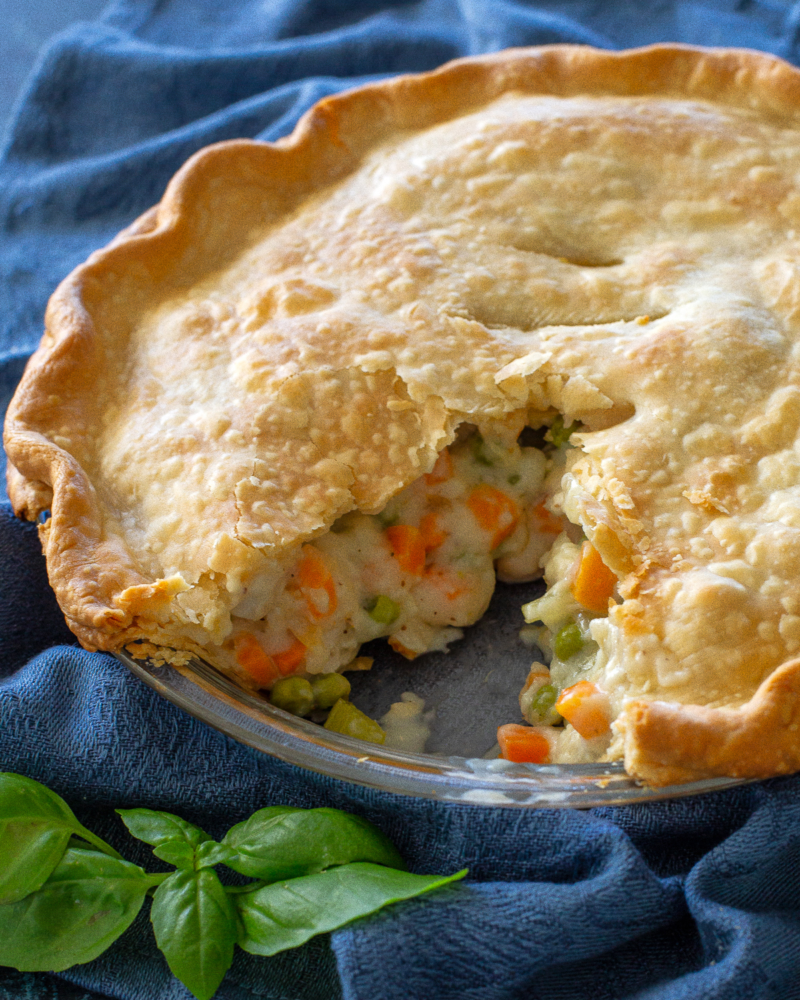

Classic Chicken Pot Pie
Home

Description
Classic Chicken Pot Pie is a dish from my girlfriend's family. It is how it sounds; made with love for the comfort of those you cherish.
Ingredients
- 1 15oz Box of Pillsbury refrigerated pie crust, softened as directed on box.
- 1/3 Cup Butter
- 1/3 Cup Chopped Onion
- 1/3 Cup All-Purpose Flour
- 1/2 Tsp Salt
- 1/4 Tsp Pepper
- 1 Can 14oz Chicken Broth
- 1/2 Cup Milk
- 2 1/2 Cups Shredded Cooked Chicken or Turkey
- 2 Cups Frozen Mixed Vegetables Thawed
Steps
- Preheat oven to 425 degrees. Make pie crusts as directed on box for two crust pie, using a 9 inch glass plate/pie dish.
- In a 2 quart saucepan, melt butter over medium heat. Add onion and stir for 2 minutes or until tender. Stir in flour, salt+pepper until well blended. Cook 2-3 minutes, stirring constantly. Gradually stir in broth and milk until bubbly/thickened. Stir in chicken and frozen vegetables.
- Spoon chicken mixture into crust.
- Cut second crust into strips. Place on pie in a lattice pattern.
- Seal edge and flute. Cover crust with foil to prevent excessive browning.
- Bake 30-40 minutes or until crust is golden brown.
- Remove foil during last 15 minutes of baking.
- Let stand 15-20 minutes before serving.